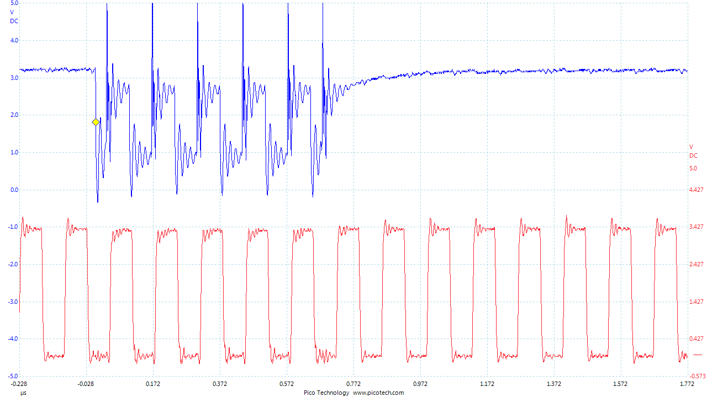
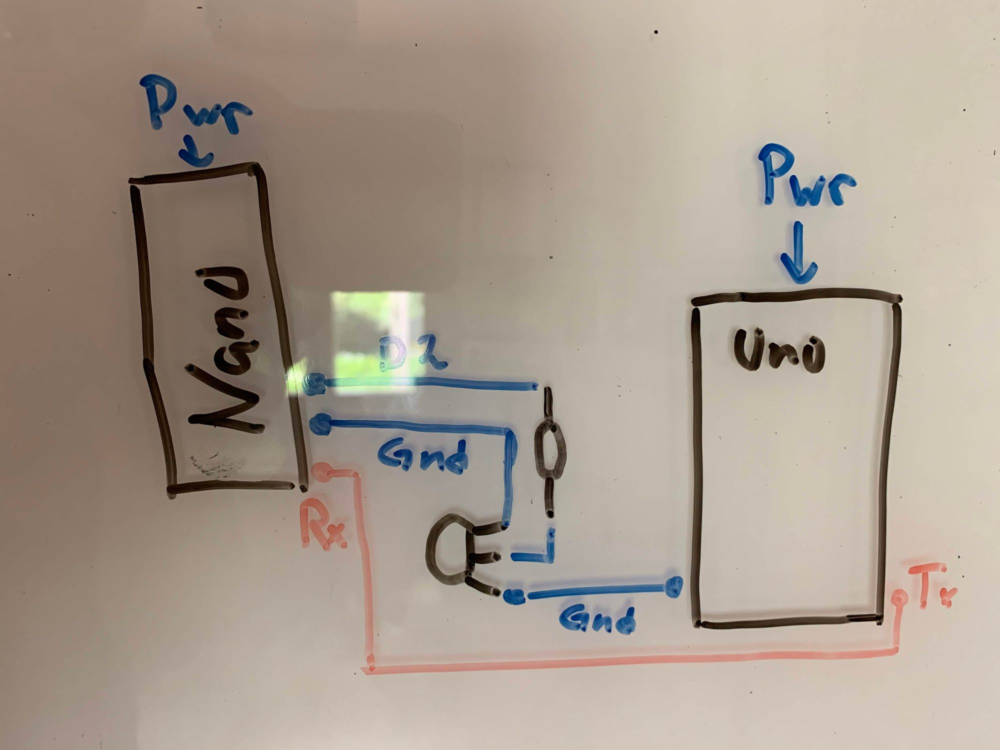
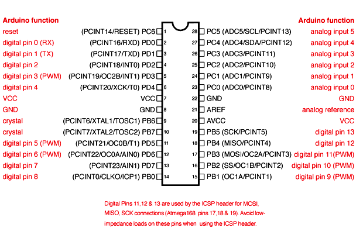
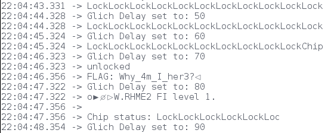

Voltage glitching on the cheap
Stand back! We’re doing science! voltage glitching on an Arduino
So a couple a weeks ago I decided that I needed more hardware and electronics experience (also writing code and making lights go blink blink is awesome). The foremost purpose of this post is to actually document what I am doing. The base setup will be two arduinos, one Nano and a Uno, also the firmware for a CTF Challenge from Riscure called Fiesta (links further down). The end goal is to use the Nano to modify the voltage that the Unos atmega328p chip receives enough so that the code execution changes and displays the flag.
What is voltage glitching?
Doing voltage glitching is basically precisely controlling the power supply of a micro controller. This can either mean increasing or decreasing the power during a couple of clock cycles.

In the diagram above, the blue represents the power (V/DC), and red represents the micro controllers clock cycles. Manipulating the amount of power and the length can result in interesting thing, such like a instruction misbehaving in making an extra jump, or changing the value of an integer. And this power glitching must be done with some degree of accuracy, like using a FPGA card or even better a Chipwhisperer. Though dropping the power for too long will result in a chip reset, or a corrupted firmware. Which the latter can be quite expensive if one does not have the source code of the firmware.
But a good FPGA or Chipwhisperer can be expensive for a first time hardware hacker and I had a couple of Arduinos laying around, so challenge accepted…
Setup
Components needed:
- Arduino Uno
- Arduino Nano
- Breadboard
- 2N7000 Transistor
- 630Ω Resistor
- Various Breadboard Lab Cables
Lets start by loading the target source code onto our victim (Uno) using avrdude.
root@linux:~# wget https://raw.githubusercontent.com/Riscure/Rhme-2016/master/challenges/binaries/fiesta/fiesta.hex
root@linux:~# avrdude -c arduino -p atmega328p -p /dev/<UNO Device> -b115200 -u -V -U flash:w:fiesta.hex
Powering on the Arduino Uno, and connecting over serial displays an eternal loop that we are to break out of, which is saying “Lock”.
root@linux:~# screen /dev/ttyACM1 19200
18:12:58.044 -> RHME2 FI level 1.
18:12:58.044 ->
18:12:58.076 -> Chip status: LockLockLockLockLockLockLockLockLockLockLockLockLockLock[...]
Cool, so step one works, loading the victim firmware onto the board.
Connecting glitching source
Step two, connecting the cables from the glitch source (Nano) to the Uno. On a high level picture it would look something like this:

But the immediate problem is that the Uno contains capacitors in order to store and filter electricity to the micro controller, in case of… glitches. Which means, in order to power glitch the Atmega328p, the micro controller has to be put onto a breadboard, and connect the relevant cables for it to send and receive data. That way it is fairly trivial to control the micro controllers ground, without any interfering capacitors. This can also be achieved on other hardware (like a Nano which does not have a removable micro controller) by looking up the specification and with a steady hand, desolder the ground pin.
Carefully removing the micro controller and placing it on the breadboard, the next step would be to reconnect it back to the arduino board itself on the corresponding terminals.

The pins that should be connected back are at least Pin 1, 2, 3, 7,9,10 and 20. Which will handle basic power and operations, as well as Serial send/receive/reset to the micro controller. From the Uno board we also want to have the Uno serial send its data to the Nanos Serial Rx port, so Connect Uno (Tx) to Nano (Rx). Next step is actually wiring up the Glitching logic to control the Uno Micro controllers ground, on the Nano using the Transistor (2N7000) according to the high level scheme above.
The final assembly should be something like the image below. In this case I’ve connected the Nano Ground to Uno micro controller ground pin 8.

The 2N7000 Transistor is what is actually going to control the ground to the micro controller. By connecting Nano D2 to the transistors middle pin though the resistor, the circuit is open as long as the pin has a HIGH state, thus providing the controller with power. As soon as D2 goes into a LOW state, the transistor will close and therefor the controller will loose power. The trick is to do it long enough so that the CPU Instruction glitches, but not so long so that it’ll reset or corrupt he device…
Glitching time
Time to actually write and load the source code onto the Nano that will perform the glitching steps. The code that I wrote for this challenge is fairly simple, but still go through a couple key points.
void loop() {
// put your main code here, to run repeatedly:
for (int i = 0; i<200;i++){
if (Serial.available() > 0) {
// read the incoming byte:
incomingByte = Serial.read();
Serial.print(char(incomingByte));
}
}
delay(1000);
glitch();
}
The for loop is intended to read 200 bytes on serial Rx, in order to if the glitch is successful, read the flag. then create a delay of 1 second for the power to normalize before calling the function glitch(), this is important as if the target chip is not in a normal state the glitch can have some interesting (read corrupting) results.
void glitch(){
int waste = 0;
digitalWrite(powerPin, LOW); //Powerpin = D2
for (int i = 0; i<glitchDelay; i++){waste++;}
digitalWrite(powerPin, HIGH);
glitchDelay +=10;
Serial.println();
Serial.print("Glich Delay set to: ");
Serial.print(glitchDelay);
Serial.println();
}
The glitch function have a couple things going on. First of all, it sets the powerPin to LOW, in reference to earlier it simply cuts off the Unos Micro controllers ground. Having the D2 Pin to LOW, enter the for loop. Now you might as why a for loop, and not the delay() function. Simply because even setting a delay(1) for a millisecond, is too slow. Therefor i defined a for loop that will do a simple waste++; so that it does a couple instructions each loop.
After the for loop setting the D2 pin to HIGH again in order supply the micro controller with power again, completing one glitch() function call. Now since this is a loop, the code also increases the glitchDelay with 10 each loop, in order to extend the length of the glitch automatically.
Putting all the code together it should look something like:
int incomingByte = 0;
char b[5];
int powerPin = 2;
int glitchDelay = 0;
void setup() {
Serial.begin(19200);
Serial.println("Arduino is ready");
pinMode(powerPin, OUTPUT);
digitalWrite(powerPin, HIGH);
delay(5000);
Serial.println("Gliching is ready");
}
void glitch(){
int waste = 0;
digitalWrite(powerPin, LOW);
for (int i = 0; i<glitchDelay; i++){ waste++; }
digitalWrite(powerPin, HIGH);
glitchDelay +=10;
Serial.println();
Serial.print("Glich Delay set to: ");
Serial.print(glitchDelay);
Serial.println();
}
void loop() {
for (int i = 0; i<200;i++){
if (Serial.available() > 0) {
// read the incoming byte:
incomingByte = Serial.read();
Serial.print(char(incomingByte));
}
}
delay(1000);
glitch();
}
Running the code it should eventually display the flag from the Arduino Uno!

While this might seem like a trivial implementation, there are accounts where ex. the Xbox360 was unlocked using this method, link to wiki.